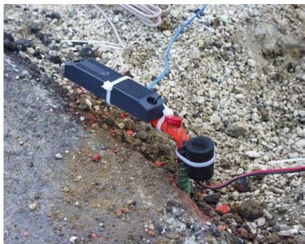
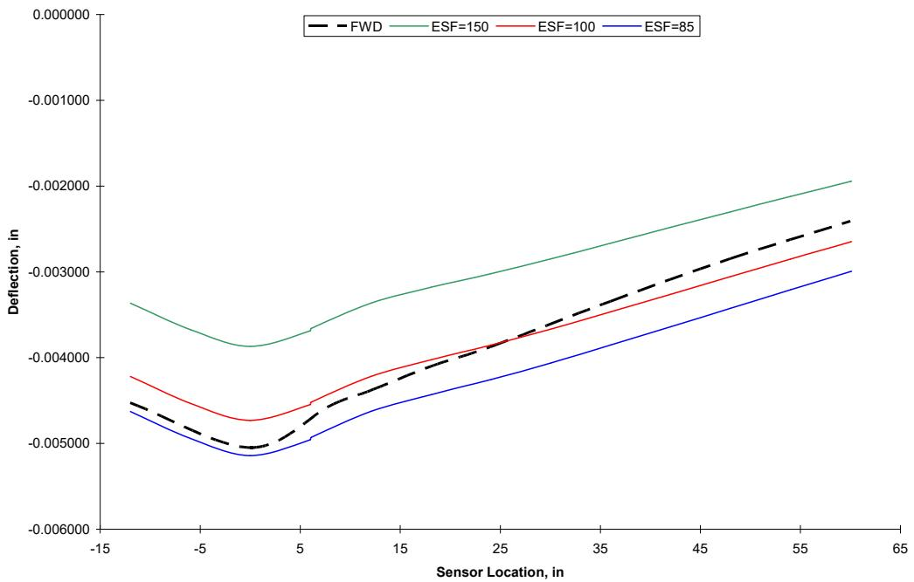
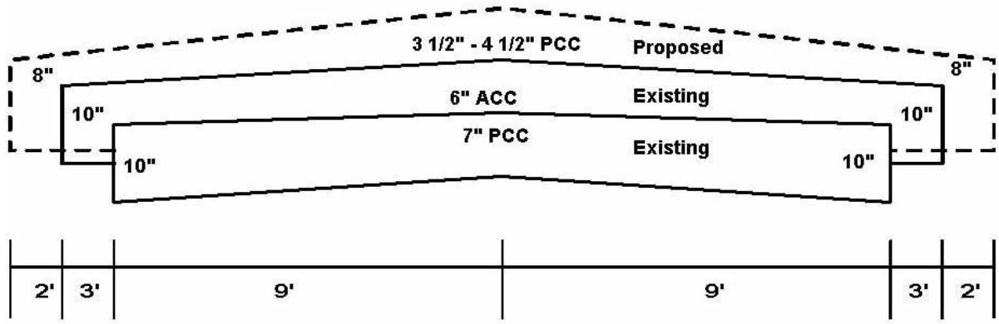
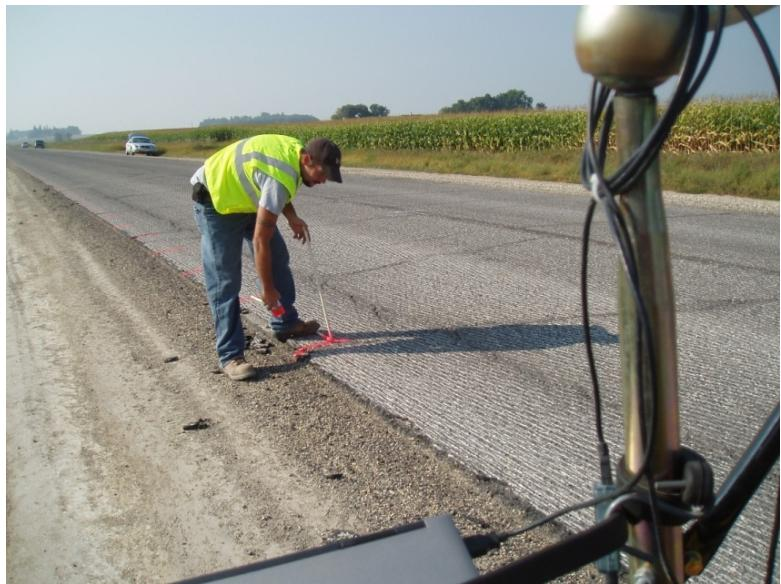
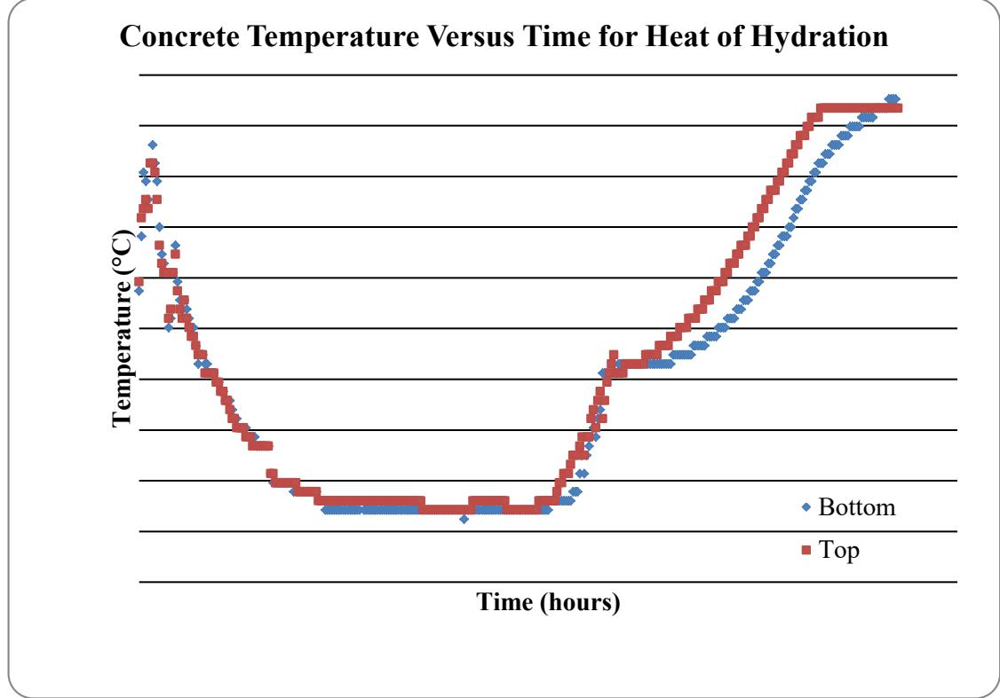

Maturity Testing for Concrete Opening Strength
Maturity Testing for Concrete Opening Strength is a practical application of the Maturity Method that utilizes embedded temperature sensors to continuously monitor the concrete’s thermal history during the curing phase [1]. By measuring real-time temperatures at specific depths, this method allows engineers to calculate time-temperature factors or equivalent age indices, which are then used to predict strength gain and determine when pavement can safely be opened to traffic [7]. This approach provides a non-destructive means of quality control compared to traditional methods that may require cutting wires or waiting for core samples [1], serving as a specific case for estimating in-situ concrete strength gain by measuring time-temperature factors (TTF) using embedded thermocouples.
Sources (9)
Thermocouple Placement Details
Thermocouples were placed at overlay mid-depth, approximately 1,000-foot intervals (expanded from 500-foot due to concurrent projects), one foot from the pavement edge, with Madgetech data recorders logging temperatures every 15 minutes. The Iowa Maturity Device uses a 4-inch wood dowel with thermocouple wires at 1-inch and 4-inch depths, requiring manual readings four times daily to calculate time-temperature factors [1]. Alternatively, the TEMP System utilizes Dallas Semiconductor iButtons that record up to 2,048 temperature values at user-specified intervals ranging from 1 to 255 minutes [1]. Maturity probes can be inserted at multiple depths to capture temperature gradients within the slab, such as monitoring temperatures at 1, 4, and 7.5 inches for thicker sections or at 1 and 2 inches for thin overlays [2].

Maturity Device Installation [1]The maturity method enables precise determination of opening times by correlating time-temperature factors with flexural strength, allowing local traffic access at 350 psi and construction traffic at 500 psi [2]. This method can be correlated with non-destructive field tests, such as using a pickup truck to identify the point where tires indent concrete by a quarter-inch, which serves as a practical indicator for traffic opening strength [3]. By enabling rapid placement schedules, the maturity method can reduce property owner inconvenience to less than 20 hours for car traffic and approximately 30 hours for construction truck traffic [4].

Deflection comparison for pavement with 3.5″ whitetopping and 4.5 ft joint spacing [4]On the Iowa Highway 13 project, temperature probes were inserted at depths of 1, 4, and 7.5 inches and read four times daily.
The Iowa Highway 13 project utilized a 7.5-inch probe positioned one foot from the pavement edge to monitor temperature at depths of 1, 4, and 7.5 inches, with readings taken four times daily to determine the time-temperature factor. [2]

Typical cross section for the Iowa Highway 13 project [2]Strength Development and Aggregate Influence
To achieve high-durability pavements, using a 50.0 mm (2 in.) top-size coarse aggregate enhances the strength characteristics of concrete mixtures, contributing to highly durable, cost-efficient concrete pavement with improved early-age performance [5]. While high modulus quartzite aggregates result in a higher modulus of elasticity in concrete mixtures compared to other aggregate types [6], the ratio of split tensile strength to the square root of compressive strength typically ranges between 6.1 and 7.1, which is consistently lower than the commonly accepted value of 7.5 [6].
Regarding specific performance metrics, a target strength of 500 psi flexural is required for opening to local traffic and construction equipment, while a secondary threshold of 350 psi (per Cole and Okamoto, 1995) was monitored for water truck access for joint sawing [3]. Data regarding these thresholds varies by location and aggregate type: in Poweshiek County using Limestone, the time to saw is 5–6 hrs, the time to 350 psi is <1 day, and the time to 500 psi is 2–2.5 days; in Worth County using Gravel, the time to saw is 6–7 hrs, the time to 350 psi is 9 hrs, and the time to 500 psi is <16 hrs; in Osceola County using Quartzite, the time to saw is 7 hrs, the time to 350 psi is 10 hrs, and the time to 500 psi is 33 hrs; and in Johnson County using a (slower mix), the time to saw is 7.5–9.3 hrs, the time to 350 psi is 13–17 hrs, and the time to 500 psi is 35–38 hrs [3].

Worth County existing condition after milling [3]Impact of Supplementary Cementitious Materials (SCM)
Concrete containing supplementary cementitious materials like fly ash and slag exhibits higher datum temperatures and activation energy than ordinary Portland cement, though using a different datum temperature in the time-temperature factor calculation does not affect traffic opening determination if a proper strength-TTF-time correlation is employed [7]. While fly ash generally increases concrete setting time, slag cement and silica fume do not show a significant impact on setting time [6]. Regarding curing conditions, early-age strength development rates for ternary cement mortar are significantly slower than binary cement at low curing temperatures (50°F), but these rates become comparable at high curing temperatures (90°F) [7].
 Effects of curing temperature on initial set time of concrete [7]
Effects of curing temperature on initial set time of concrete [7]
Furthermore, the HIPERPAV program predicts no cracking within 3 days after paving in summer conditions because the minimum difference between concrete strength and stress remains relatively large (23–37.7 psi) [7]. In contrast, during spring and fall, this difference narrows to as low as 6.2 psi due to slower strength development and higher thermal gradients [7].
 Concrete strength vs. critical stress for summer conditions [7]
Concrete strength vs. critical stress for summer conditions [7]
Heat Evolution and Calorimetry Testing
The derivative of the semi-adiabatic temperature curve can be used to determine concrete setting time, where the maximum of the first derivative correlates to final set and the maximum of the second derivative correlates to initial set [8]. While hydration curve parameters derived from semi-adiabatic tests provide higher accuracy in predicting pavement temperatures and early-age behavior compared to those from isothermal tests because the semi-adiabatic condition better mimics in-situ thermal gradients and utilizes concrete rather than sieved mortar [9], semi-adiabatic calorimetry tests using concrete samples are highly sensitive to placement temperature, causing significant variation in thermal curves even within the same day, which limits their reliability for precise quality control despite being useful for set time prediction [9]. In contrast, simple isothermal calorimetry on sieved mortar yields consistent results across a project and clearly identifies secondary heat evolution peaks from fly ash hydration that are absent in semi-adiabatic tests [9]. Furthermore, semi-adiabatic calorimetry and isothermal calorimetry produce significantly different estimates of the degree of hydration, potentially due to inaccuracies in predicting total heat of hydration or unaccounted equipment specific heat [8].
 Predicted pavement temperatures versus measurements (pavement top, Alma Center, WI ) [9]
Predicted pavement temperatures versus measurements (pavement top, Alma Center, WI ) [9]
The area underneath the heat signature curve from calorimetry tests indicates one-day strength gain in concrete [6], and a linear relationship exists between generated heat from cement hydration and early-age strength development in mortar samples up to two days, allowing heat evolution curves to predict strength gain and sawing windows [8]. Results from simple isothermal calorimetry illustrated that as testing temperature increased, the variation in thermal set time decreased, implying that potential concrete set time and strength development problems might show in winter construction while fewer problems may be expected in summer construction [9]. Additionally, using 24-hour calorimetric testing data instead of standard seven-day testing requires adjusting HIPERPAV reliability parameters, specifically increasing the reliability setting to 60% to match stress-to-strength ratio predictions from full-duration tests [8].

(a). Concrete temperatures versus time for heat of hydration [6]Nondestructive Testing Methods
Falling weight deflectometer (FWD) testing is utilized before and after PCC overlay construction to measure structural adequacy, providing necessary inputs for overlay design programs that aim to reduce deflections in the final surface [3].
Overlay Construction Guidelines and Jointing
For thin overlays (2–5 inches), the maximum skip distance for initial relief joint sawing should be five joints, not the 5–10 joints used in conventional-depth pavements [3]. Specifically, for thin overlays, the maximum skip distance for initial relief joint sawing is limited to five joints, whereas conventional-depth pavements may allow up to ten skipped joints depending on aggregate type [3]. Joint formation should be initiated with early entry saws and 1/8-inch-wide blades when concrete strengths reach the 100 to 120 psi flexural strength range or when raveling does not occur behind the saw [4]. Furthermore, changes in existing pavement surface temperature over the course of a day may dictate that some areas be skipped by the saw in the morning to meet rapid strength gain potential occurring later in the afternoon [4].
In PCC overlays of less than 4 inches, the use of fibers is suggested as an insurance policy against loss of surface due to a crack, though they will not stop cracking but only retard the loss of material around it [4]. Additionally, geotextile bond breakers used in overlay construction provide a thinner layer (0.1+/- inch) compared to traditional 1-inch HMA layers while maintaining long-term performance, which helps preserve vertical clearance [3]. Finally, shouldering should be done as soon as pavement strength allows for construction traffic, which normally occurs within two days after paving and can be monitored using the maturity method [4].
 Nailing pattern for the geotextile materials to the existing pavement [3]
Nailing pattern for the geotextile materials to the existing pavement [3]
Traffic Opening Strength Criteria
The roadway was opened to local traffic at 350 psi and construction traffic at 500 psi flexural strength.
See also
References
- J. K. Cable, M. L. Anthony, F. S. Fanous, and B. M. Phares, "Evaluation of Composite Pavement Unbonded Overlays: Phases I and II," Center for Portland Cement Concrete Pavement Technology, Iowa State University, Ames, IA, Rep. TR-478, 2003. [Online]. Available: https://www.intrans.iastate.edu/research/completed/evaluation-of-composite-pavement-unbonded-overlays-phase-iii-tr-478-hr-1093-proj-2/
- J. K. Cable, J. L. Morud, and T. R. Tabbert, "Evaluation of Composite Pavement Unbonded Overlays: Phase III," CTRE, Iowa State University, Ames, IA, Rep. TR-478, 2006. [Online]. Available: https://rosap.ntl.bts.gov/view/dot/24065
- P. D. Wiegand, J. K. Cable, T. Cackler, and D. Harrington, "Improving Concrete Overlay Construction," National Concrete Pavement Technology Center, Ames, IA, Rep. TR-600, 2010. [Online]. Available: http://publications.iowa.gov/20076/1/IADOT_tr_600_Improving_Concrete_Overlay_Construction_2010.pdf
- J. K. Cable, F. S. Fanous, H. Ceylan, D. Wood, D. Frentress, T. Tabbert, S. Y. Oh, and K. Gopalakrishnan, "Design and Construction Procedures for Concrete Overlay and Widening of Existing Pavements," Center for Portland Cement Concrete Pavement Technology, Iowa State University, Ames, IA, Rep. TR-511, 2005. [Online]. Available: https://www.intrans.iastate.edu/wp-content/uploads/2018/03/oreo_design.pdf
- J. Grove, G. Fick, T. Rupnow, and F. Bektas, "Material and Construction Optimization for Prevention of Premature Pavement Distress in PCC Pavements," National Concrete Pavement Technology Center, Ames, IA, Rep. TPF-5(066), 2008. [Online]. Available: https://www.intrans.iastate.edu/wp-content/uploads/2018/03/mco-final.pdf
- P. Taylor, P. Tikalsky, K. Wang, G. Fick, and X. Wang, "Development of Performance Properties of Ternary Mixtures: Field Demonstrations and Project Summary," National Concrete Pavement Technology Center, Ames, IA, Rep. TPF-5(117), 2012. [Online]. Available: https://www.intrans.iastate.edu/wp-content/uploads/2018/03/ternary_final_w_cvr.pdf
- K. Wang and Z. Ge, "Evaluating Properties of Blended Cements for Concrete Pavements," Department of Civil, Construction and Environmental Engineering, Iowa State University, Ames, IA, 2003. [Online]. Available: https://www.intrans.iastate.edu/wp-content/uploads/2018/03/blended_cements-1.pdf
- K. Wang, Z. Ge, J. Grove, J. M. Ruiz, R. Rasmussen, and T. Ferragut, "Simple and Rapid Test for Monitoring the Heat Evolution of Concrete Mixtures, Phase 2," Center for Transportation Research and Education, Ames, IA, 2007. [Online]. Available: https://www.intrans.iastate.edu/wp-content/uploads/2018/03/calorimeter.pdf
- K. Wang, J. M. Ruiz, J. Hu, Z. Ge, Q. Xu, J. Grove, and R. Rasmussen, "Simple and Rapid Test for Monitoring the Heat Evolution ..., Phase III," National Concrete Pavement Technology Center, Ames, IA, 2008. [Online]. Available: https://www.intrans.iastate.edu/wp-content/uploads/2018/03/CalorimeterReportPhaseIII.pdf
Feedback on this page